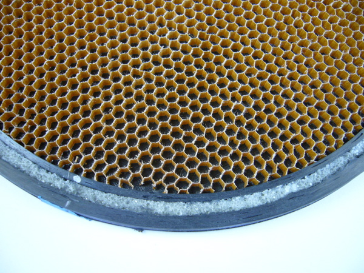

<--Previous
Up
Next-->

The ring was made in two pieces, an inner ring and an outer ring using a special jig, About 12 meters of carbon fiibre tow was used in each ring. The ring was bonded to bat with cyanoacrylate.